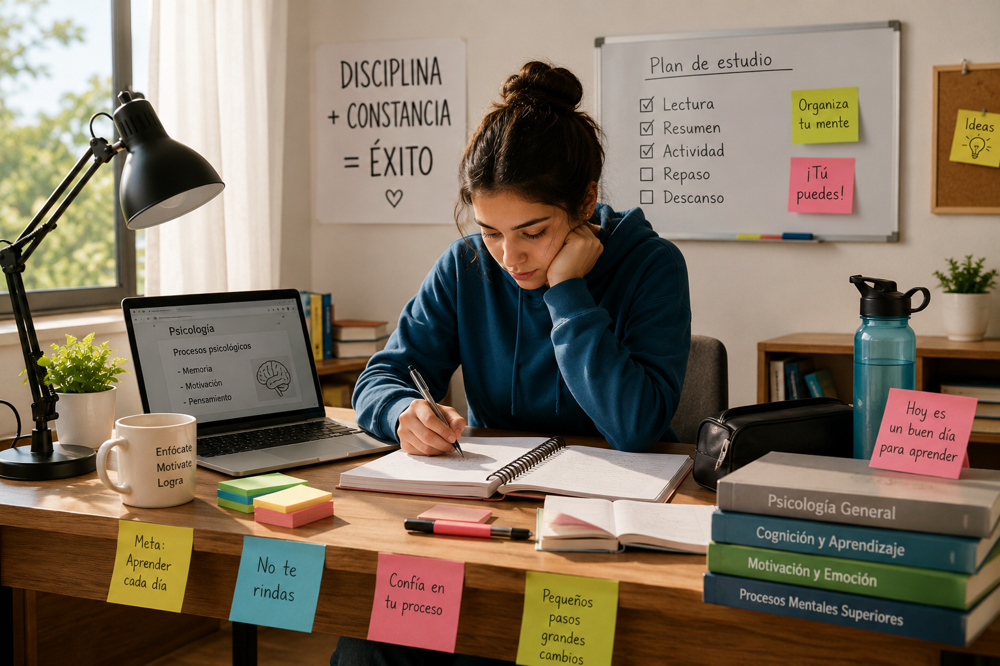
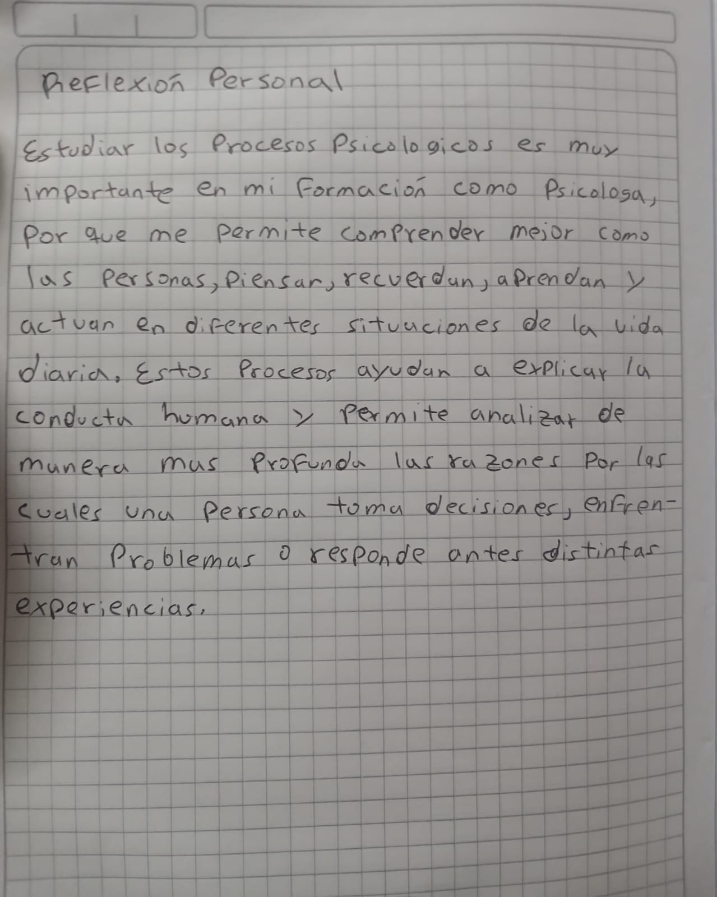

Memoria
La memoria es un proceso psicológico básico que permite guardar y recuperar información obtenida por medio de la experiencia. Gracias a ella, las personas pueden recordar conocimientos, lugares, rostros, instrucciones y aprendizajes.
Ejemplo cotidiano
Un estudiante usa la memoria cuando recuerda los temas estudiados para responder una evaluación.
Motivación
La motivación es un proceso activador de la conducta humana, porque impulsa a la persona a actuar para alcanzar una meta. Influye en el esfuerzo, la constancia y el interés frente a una actividad.
Ejemplo cotidiano
Un estudiante se motiva a estudiar porque desea obtener una buena calificación y avanzar en su formación académica.
Pensamiento
El pensamiento es un proceso psicológico superior que permite analizar, reflexionar, resolver problemas y tomar decisiones. Ayuda a organizar la información y a comprender mejor las situaciones.
Ejemplo cotidiano
Una persona usa el pensamiento cuando analiza varias opciones antes de tomar una decisión importante.
Relación entre memoria, motivación y pensamiento
La memoria, la motivación y el pensamiento trabajan juntos en muchas actividades cotidianas. La memoria permite recordar información, la motivación impulsa a actuar y el pensamiento ayuda a analizar y tomar decisiones.
Ejemplo
Al estudiar para un examen, el estudiante recuerda contenidos, se motiva para continuar estudiando y piensa en la mejor forma de responder.
Preguntas orientadoras
¿De qué manera los procesos psicológicos básicos influyen en el funcionamiento de los procesos psicológicos activadores de la conducta humana y superiores?
Los procesos psicológicos básicos influyen en los procesos activadores de la conducta humana y en los procesos superiores porque sirven como base para comprender, interpretar y responder a las situaciones de la vida diaria. En este caso, la memoria permite conservar y recuperar información de experiencias anteriores, lo cual ayuda a orientar la motivación y el pensamiento.
Por ejemplo, cuando una persona recuerda que anteriormente logró buenos resultados al estudiar con dedicación, esa experiencia puede motivarla a esforzarse nuevamente. A su vez, el pensamiento utiliza la información almacenada en la memoria para analizar situaciones, resolver problemas y tomar decisiones.
Esta interacción se evidencia cuando un estudiante realiza una actividad académica. Primero recuerda los conocimientos aprendidos, luego se motiva para cumplir con la tarea y finalmente utiliza el pensamiento para organizar ideas, analizar la información y construir una respuesta adecuada.
Describa la naturaleza interdependiente entre los procesos psicológicos básicos, activadores de la conducta humana y superiores.
La relación entre la memoria, la motivación y el pensamiento es interdependiente, porque cada proceso cumple una función específica, pero necesita de los demás para lograr una respuesta completa. La memoria permite recordar información, la motivación impulsa la acción y el pensamiento permite analizar, organizar y aplicar esa información.
Un caso práctico puede ser la elaboración de una Wiki académica. Para realizar esta tarea, el estudiante utiliza la memoria al recordar conceptos vistos en el curso; utiliza la motivación al mantener el interés y la disposición para terminar el trabajo; y utiliza el pensamiento al analizar la información, organizar las ideas, redactar los textos y diseñar una actividad interactiva.
Si uno de estos procesos falta, la tarea se vuelve más difícil. Sin memoria, el estudiante no podría recuperar información importante; sin motivación, podría abandonar la actividad; y sin pensamiento, no lograría analizar ni estructurar correctamente el contenido. Por eso, estos procesos trabajan juntos y son fundamentales para cumplir tareas cognitivas de alto nivel.
Actividad interactiva: “Recuerda, piensa y decide”
Esta actividad permite reconocer cómo se relacionan la memoria, la motivación y el pensamiento mediante una práctica sencilla basada en la observación, el recuerdo, el análisis y la toma de decisiones.
Objetivo
Reconocer cómo se relacionan la memoria, la motivación y el pensamiento mediante una actividad práctica que permita observar, recordar, analizar y tomar decisiones a partir de una imagen.
Instrucciones
Observa la imagen durante 30 segundos. Después de ese tiempo, la imagen se ocultará y deberás responder las preguntas sin volver a mirarla.
Reglas
- Solo podrás observar la imagen durante 30 segundos.
- No podrás volver a mirar la imagen mientras respondes.
- Debes responder según lo que recuerdes.
- Debes analizar la situación usando memoria, motivación y pensamiento.
Tiempo restante: 30 segundos

Preguntas de reflexión
Reflexión final de la actividad
Esta actividad demuestra que la memoria, la motivación y el pensamiento se complementan en la vida diaria. La memoria permite recuperar información, la motivación impulsa la participación y el pensamiento facilita el análisis y la toma de decisiones.
Reflexión personal
En esta sección se presenta una reflexión personal escrita a mano sobre la importancia de estudiar los procesos psicológicos en la formación como psicólogo.

Video propio y gráficos
En esta sección se incluye un video elaborado por el estudiante y dos gráficos que permiten comprender mejor la relación entre memoria, motivación y pensamiento.
Video propio
En este video se explica la relación entre memoria, motivación y pensamiento como procesos psicológicos presentes en la vida diaria.
Gráfico 1: Mapa conceptual
Estos procesos se relacionan para facilitar el aprendizaje, la solución de problemas y la adaptación a la vida diaria.
Gráfico 2: Cuadro comparativo
| Proceso | Tipo | Función | Ejemplo |
|---|---|---|---|
| Memoria | Básico | Guardar y recuperar información. | Recordar temas para un examen. |
| Motivación | Activador de la conducta | Impulsar a la persona a cumplir metas. | Estudiar para obtener una buena nota. |
| Pensamiento | Superior | Analizar, razonar y tomar decisiones. | Elegir la mejor respuesta en una actividad. |
Conclusiones y referencias
Conclusiones
Los procesos psicológicos son fundamentales para comprender la conducta humana. La memoria permite recordar experiencias y aprendizajes, la motivación impulsa la acción hacia una meta y el pensamiento facilita el análisis, la reflexión y la toma de decisiones.
La relación entre estos procesos se evidencia constantemente en la vida diaria, especialmente en actividades académicas, personales y sociales. Por esta razón, estudiar los procesos psicológicos permite comprender mejor el comportamiento humano y su adaptación al entorno.
Referencias APA 7
Almansa, P. (2012). Qué es el pensamiento creativo. Index de Enfermería, 21(3), 165-168. https://dx.doi.org/10.4321/S1132-12962012000200012
Ardila, R. (2011). Inteligencia. ¿Qué sabemos y qué nos falta por investigar? Revista de la Academia Colombiana de Ciencias Exactas, Físicas y Naturales, 35(134), 97-103. http://www.scielo.org.co/pdf/racefn/v35n134/v35n134a09.pdf
Jara, V. (2012). Desarrollo del pensamiento y teorías cognitivas para enseñar a pensar y producir conocimientos. Sophia, Colección de Filosofía de la Educación, (12), 53-66. https://www.redalyc.org/articulo.oa?id=441846101004